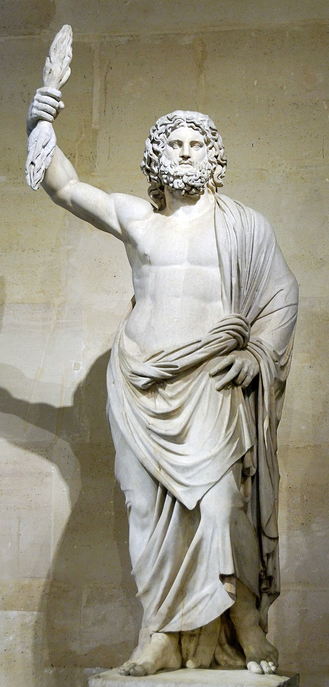

Zeus is the child of Cronus and Rhea,
the youngest of his siblings to be born,
though sometimes reckoned the eldest
as the others required disgorging from
Cronus's stomach. In most traditions, he
is married to Hera, by whom he is usually
said to have fathered Ares, Eileithyia, Hebe,
and Hephaestus. At the oracle of Dodona,
his consort was said to be Dione, by whom
the Iliad states that he fathered Aphrodite.
According to the Theogony, Zeus's first wife
was Metis, by whom he had Athena.
Zeus was also infamous for his erotic escapades.
These resulted in many divine and heroic offspring,
including Apollo, Artemis, Hermes, Persephone,
Dionysus, Perseus, Heracles, Helen of Troy, Minos,
and the Muses.